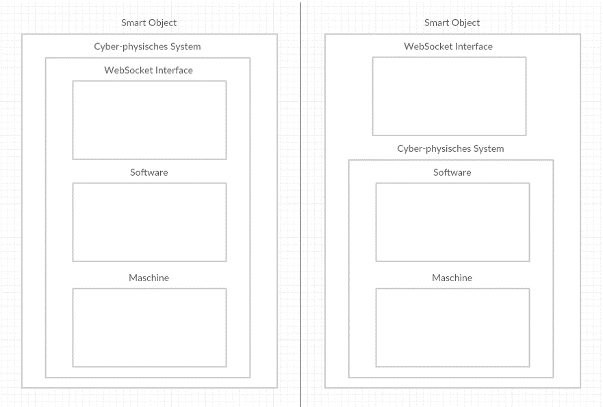
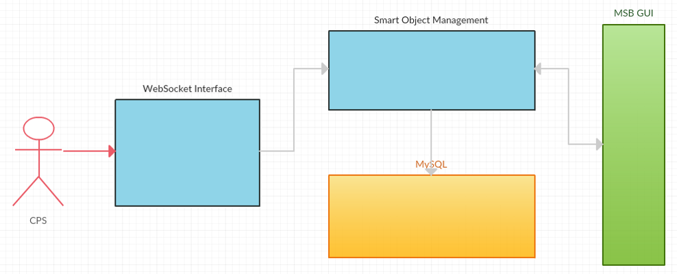
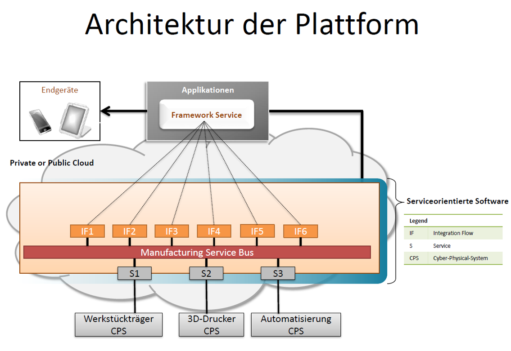
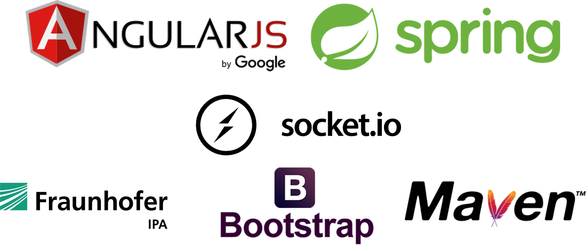
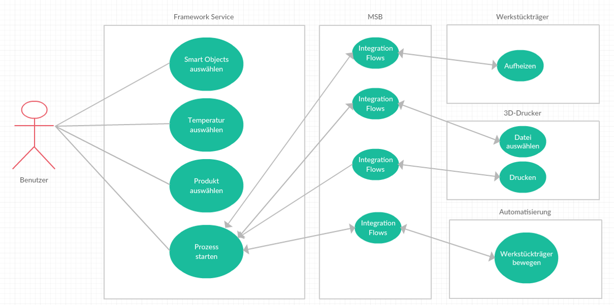

Einführung
- Heutige Produktion:
- Komponenten sind geschlossene Systeme (Blackbox)
- Konfiguration nur durch Maschinenhersteller
- Zukünftige Produktion:
- Nutzung von CPS
- Verwaltung durch Service
- Genutzte Systeme:
- Manufacturing Service Bus (MSB)
- Smart Object und Applikation
Motivation
- Ablaufsteuerung beim Produzenten selbst
- Für Kunden mit flexiblem Produktportfolio
- Wechselnde Anforderungen an die Produktionsprozesse
- Maschinenzeit an Dritte zur Verfügung zu stellen
- Hardware an neue Prozesse anpassen
- Produktion dezentral, flexibler und nicht mehr ortsgebunden
- Wissen über speicherprogrammierbare Steuerung (SPS) keine Notwendigkeit um Anlagen zu verketten
- Umsetzung von Smart Objects und Applikationen durch Programmierer
Ziele
- Die CPS 3D-Drucker und Automatisierung zu Smart Objects erweitern
- Ein Konzept für den Framework Service zu entwickeln
- Eine Implementierung des Framework Services
- Einen Produktionsprozess mit allen Komponenten erstellen
Cyber-physische Systeme

Smart Object

Manufacturing Service Bus

Technologien

Use-Case

Technologien:
HTML / JavaScript / CSS mit AngularJS, Java mit Spring, Socket.io, Maven / Bower, GIT, Bootstrap, Eclipse / Atom